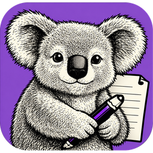

NoteCraft
Notes as plain files, in plain folders.
An open, clean-room alternative to OneNote, written in pure Rust.
- Rust
- HTML + Markdown
- No server
- Windows, macOS, Linux
Runs fully in your browser — a ~9 MB WebAssembly download, nothing installed, nothing sent anywhere.
Your files stay yours
Every notebook, section and page is a plain folder on disk. Point any sync tool — Dropbox, OneDrive, Syncthing, git — at the folder and you have backup and multi-device sync, with no NoteCraft server involved.
Nest without limits
Notebooks, section groups, sections and pages can all hold sub-pages, to any depth. OneNote stops at three levels of sub-pages — NoteCraft doesn't.
HTML or Markdown, your call
Pages are stored as clean HTML or CommonMark+GFM (index.md), configurable per page, section, notebook or globally. Open a page in any editor and it still makes sense.
Clean-room, cross-platform
Built from public requirements and documentation only — no Microsoft source, no decompiled binaries. One Rust codebase, native on Windows, macOS and Linux.